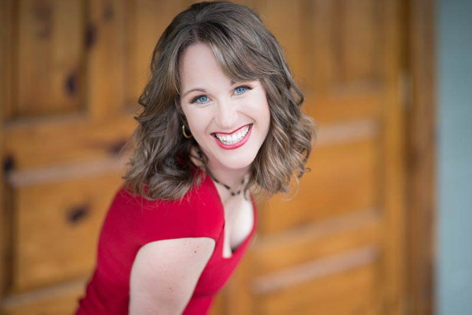
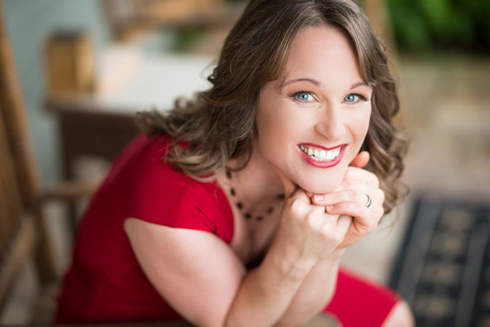

Click for full-size file
Click for full-size file
Click for full-size file
Photo Credits: Rob Taylor Photography & Design
A singer “who thoroughly captures the imagination,” soprano Kathryn Mueller has appeared with the Los Angeles Chamber Orchestra, American Bach Soloists, Pacific Symphony, Portland Baroque Orchestra, Santa Fe Pro Musica, and Eastern Music Festival. Honors include a GRAMMY nomination for True Concord’s Far in the Heavens, and prizes from the Oratorio Society of New York's Solo Competition and Early Music America's Baroque Performance Competition. She was a vocal fellow at the Carmel Bach Festival and a soloist on Seraphic Fire’s best-selling Monteverdi Vespers of 1610. Kathryn is on the voice faculties at East Carolina University and North Carolina State University.
American soprano Kathryn Mueller has made a mark with her "appealing stage presence of personal warmth and musicianship", singing a wide range of repertoire from period baroque performances to world premieres of new works. She has sung with the LA Chamber Orchestra, American Bach Soloists, Portland Baroque Orchestra, Santa Fe Pro Musica, Charlotte Symphony, Memphis Symphony, Phoenix Symphony, New Mexico Symphony Orchestra, Winston-Salem Symphony, and Tucson Symphony Orchestra.
Favorite concert works include Barber’s Knoxville: Summer of 1915, Glière’s Concerto for Coloratura Soprano, Haydn’s Creation, Bach’s
Kathryn’s honors include a GRAMMY nomination for her solo work on True Concord’s album Far in the Heavens, and prizes from the Oratorio Society of New York's Solo Competition and Early Music America's Baroque Performance Competition. In 2011 she was one of four fellows in the prestigious Adams Vocal Master Class at the Carmel Bach Festival. Kathryn has also recorded two GRAMMY-nominated albums with Seraphic Fire, and is featured as a soloist on Seraphic Fire’s best-selling Monteverdi Vespers of 1610.
Kathryn was born in San Francisco, and began her musical studies on the edge of Arizona’s White Mountain Apache Reservation. She got her first pro gig – a section leader position at a church in Providence – during high school in Rhode Island, continued her vocal studies as an undergraduate at Brown University, and then earned a Masters degree in vocal performance from the University of Arizona. She is based in Raleigh, NC and is on the voice faculties of East Carolina University and North Carolina State University.
{kind=link}
{kind=link}
{kind=link}